Quick route
Use the diagnostic, learning objectives, first worked example and foundation question. Stop once the learner can explain the central distinction accurately.
Cambridge AS9618 | Paper 2 | Paper 2 integrated review
Flexible-depth lesson
S9.01, S9.02, S9.03, S9.04, S9.05, S9.06, S9.07, S9.08, S9.09, S10.01, S10.02, S10.03, S10.04, S10.05, S10.06, S10.07, S10.08, S10.09, S10.10, S11.01, S11.02, S11.03, S11.04, S11.05, S11.06, S11.07, S11.08, S11.09, S12.01, S12.02, S12.03, S12.04, S12.05, S12.06, S12.07, S12.08, S12.09 | Learn from the diagrams, test the method, then choose the practice you need.
Part 1 | optional depth
Recall S9.01, S9.03, S9.04, S9.06, S9.02, S10.01, S10.03, S10.08, S10.09, S9.07, S11.04, S11.02, S11.06, S11.07, S12.04, S12.05, S12.01 before starting this lesson.
Give one accurate definition or method step before continuing. If it is missing, revisit only that prerequisite.
Part 2 | knowledge-point material sets
Follow the map, the three-part explanation and the concrete cue. Open precise wording only after the idea is clear.
R090.148 · comparison
Comparison · 1 of 3

Concrete example · 2 of 3
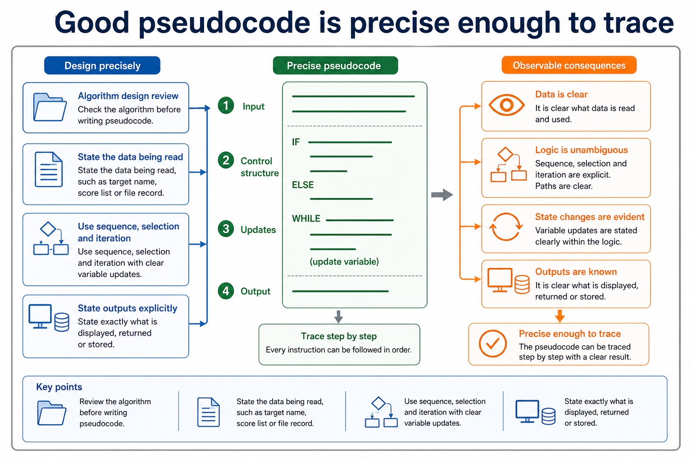
Diagram · 3 of 3

Paper 2 review: algorithm design and data structures
Use the diagrams to retrieve the method, compare similar ideas and correct one typical error.
R090.149 · comparison
Comparison · 1 of 3
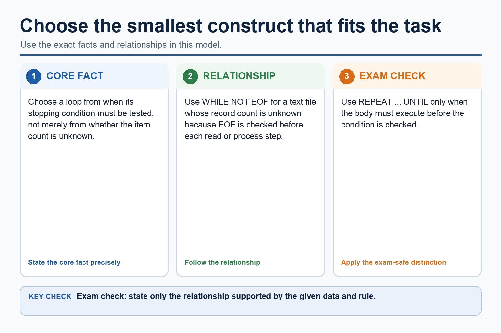
Process · 2 of 3
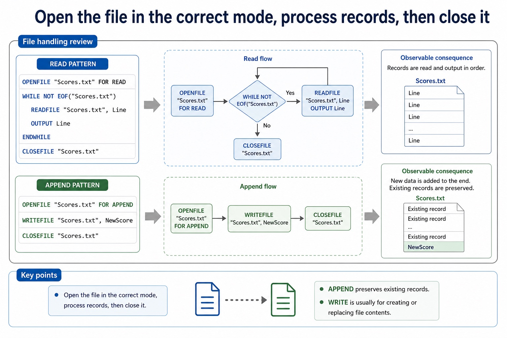
Concrete example · 3 of 3

Paper 2 review: programming constructs and file handling
Use the diagrams to retrieve the method, compare similar ideas and correct one typical error.
R090.150 · comparison
Concrete example · 1 of 3
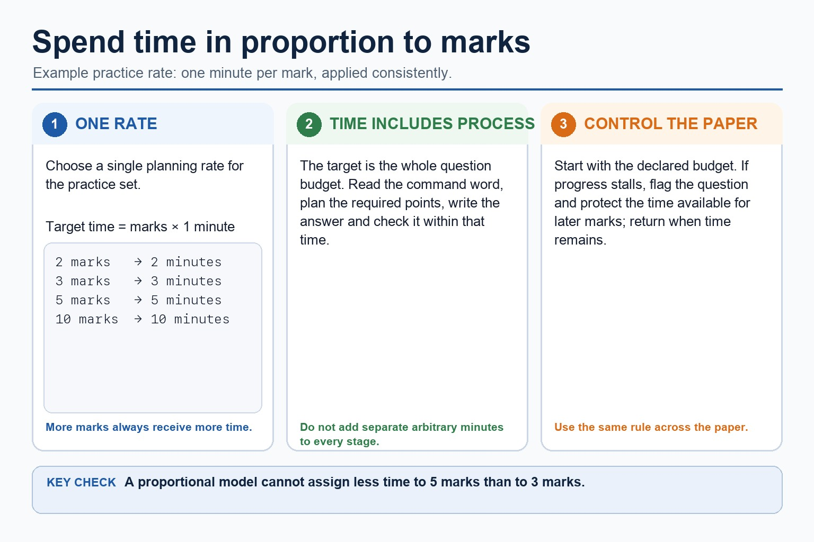
Process · 2 of 3
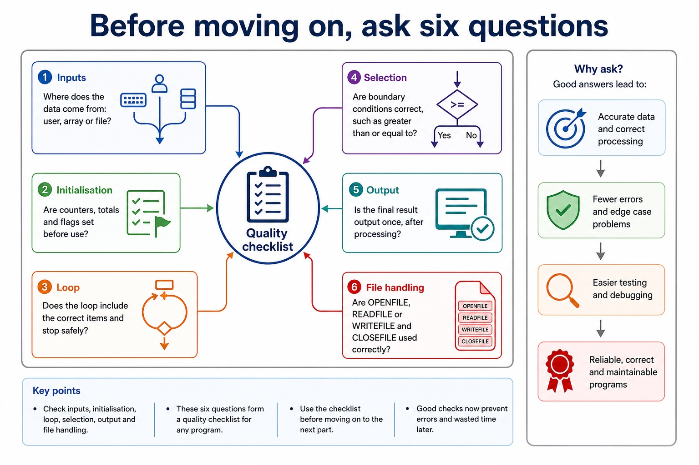
Comparison · 3 of 3
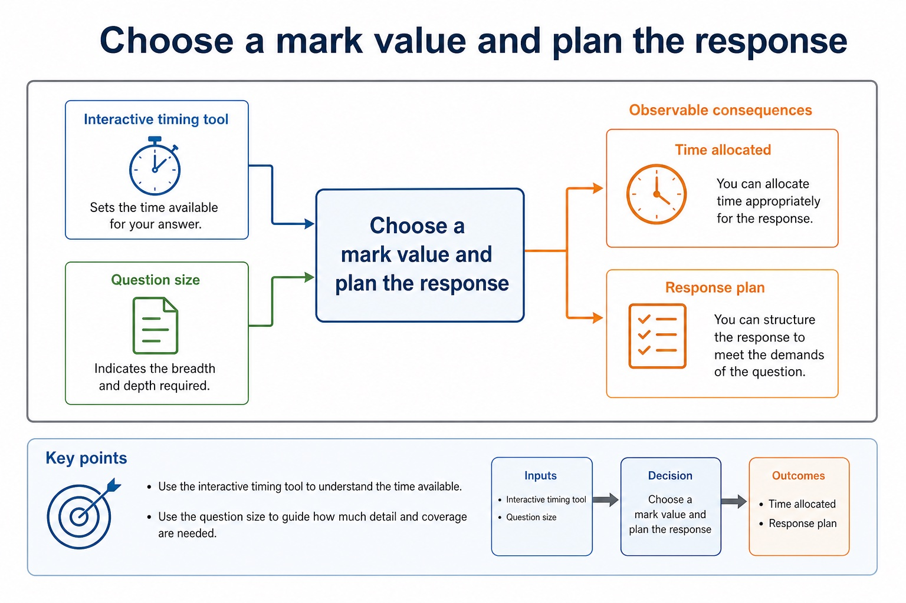
Paper 2 timed pseudocode practice
Use the diagrams to retrieve the method, compare similar ideas and correct one typical error.
R090.151 · comparison
Process · 1 of 3
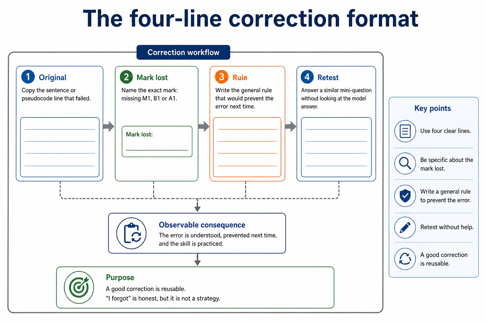
Comparison · 2 of 3
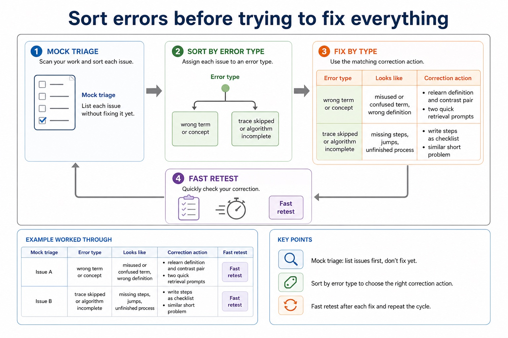
Comparison · 3 of 3
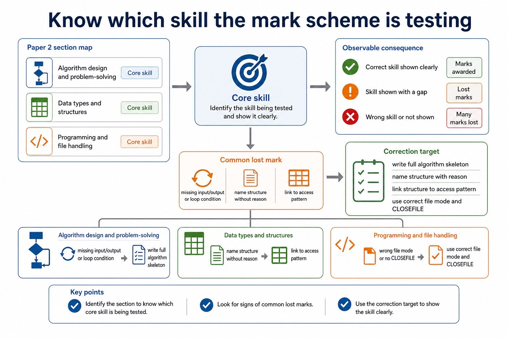
Paper 2 mock review and correction clinic
Use the diagrams to retrieve the method, compare similar ideas and correct one typical error.
Diagram · 1 of 13

Diagram · 2 of 13

Diagram · 3 of 13

Diagram · 4 of 13

Diagram · 5 of 13
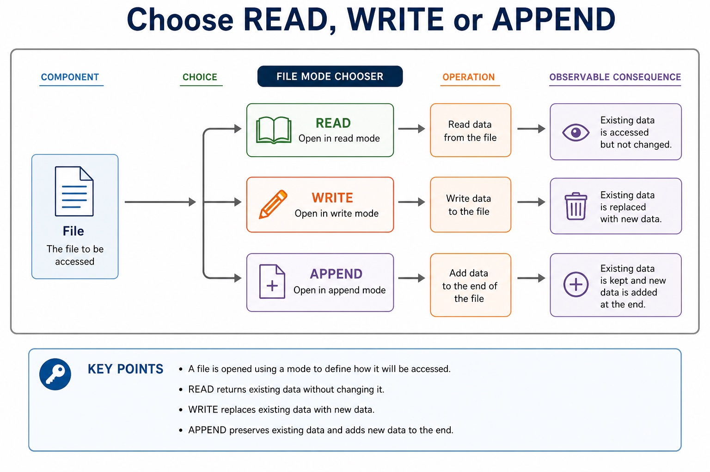
Diagram · 6 of 13
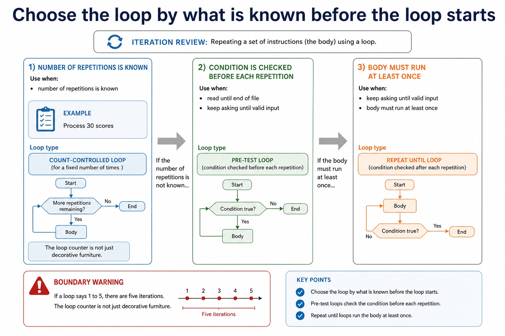
Diagram · 7 of 13
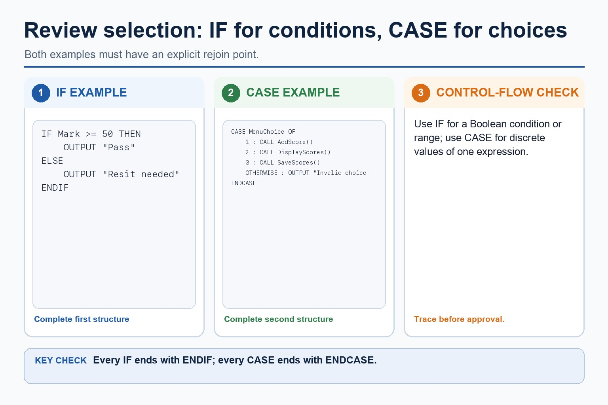
Diagram · 8 of 13

Diagram · 9 of 13

Diagram · 10 of 13

Diagram · 11 of 13
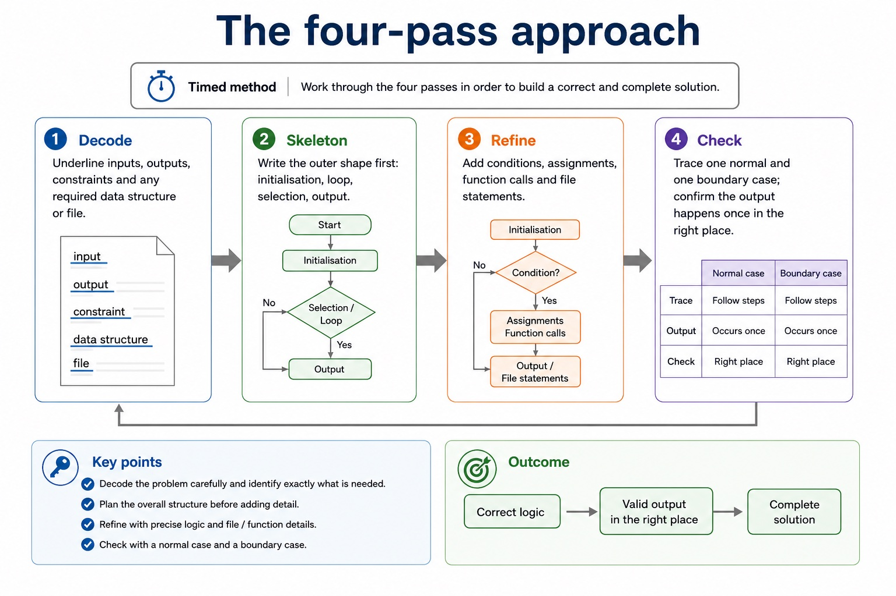
Diagram · 12 of 13
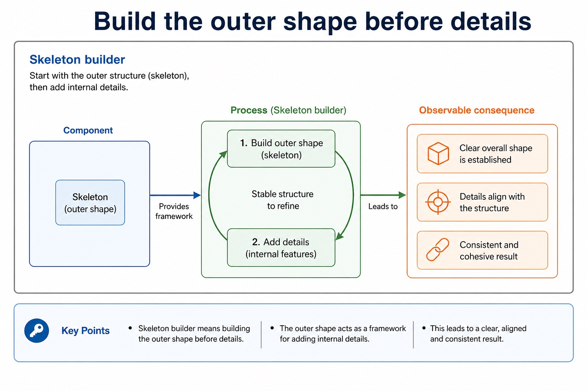
Diagram · 13 of 13
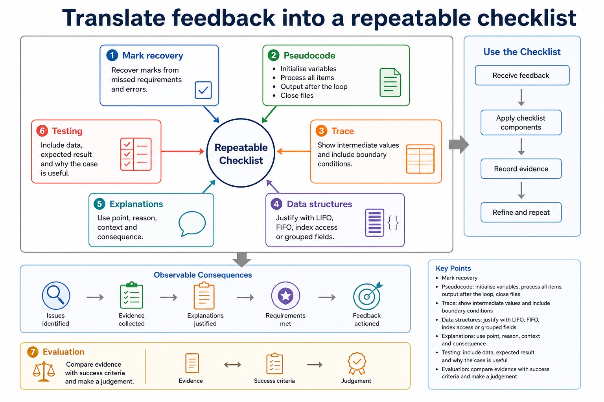
Apply the idea
modern teams often use continuous integration to repeat building and testing whenever a program changes.
Part 3 | select by learner need
Question 1. Write Cambridge pseudocode for a linear search of Name[1:20] and an ascending bubble sort of Score[1:20].
Answer: linear search initialises Found and Index; linear search loops within indexes 1 to 20 until found or exhausted; linear search compares Name[Index] with the target and records a match; bubble sort uses repeated passes; compares adjacent Score[Index] and Score[Index + 1] within valid bounds; uses Temp or an equivalent safe three-step swap; reduces the unsorted range or uses a valid no-swap stopping condition; all constructs close coherently in Cambridge pseudocode
Marking guidance: Do not award only a trace or a description; both requested algorithms must be written and must not access Index + 1 beyond the upper bound.
Common error: For the command word write, perform that exact action; do not replace it with an unrelated fact.
Question 2. Explain one common error from Section 11: Programming, and give the corrected reasoning.
Answer: Define and use a procedure; explain when the use of a procedure is appropriate; use parameters with none, one or more values passed by reference or by value.
Marking guidance: Credit distinct syllabus-accurate points that follow the command word.
Common error: Do not repeat the same point in different words; each mark needs a separate idea or method step.
Question 3. Compare two closely related ideas from Section 9: Algorithm design and problem-solving.
Answer: Use stepwise refinement to develop an algorithm from a high-level solution to a level of detail from which a program can be written; each level must preserve the parent purpose.
Marking guidance: Credit distinct syllabus-accurate points that follow the command word.
Common error: Do not copy the worked example unchanged; transfer the method and check it against the new context.
Question 4. Apply one method from Section 12: Software development to a fresh exam context.
Answer: Candidates should understand the purpose of a program-development lifecycle and the need for different lifecycles depending on the program being developed. Compare the principles, benefits and drawbacks of waterfall, iterative and Rapid Application Development (RAD). Lifecycle stages are analysis, design, coding, testing and maintenance.
Marking guidance: Credit distinct syllabus-accurate points that follow the command word.
Common error: Do not copy the worked example unchanged; transfer the method and check it against the new context.
| Reference | Marks | Command word | Question type |
|---|---|---|---|
| 9618/21/S/25 Q3 | 8 | write | recall |
| 9618/21/S/25 Q6(b) | 8 | complete | recall |
| 9618/21/S/25 Q7(i) | 8 | write | calculate |
| 9618/21/W/25 Q8(b) | 8 | define | recall |
Index only: Cambridge question and mark-scheme wording is not reproduced on this public course page.
Part 4 | close when ready
Students often revise by rereading notes only. Correction: review lessons require retrieval, timed practice and correction.